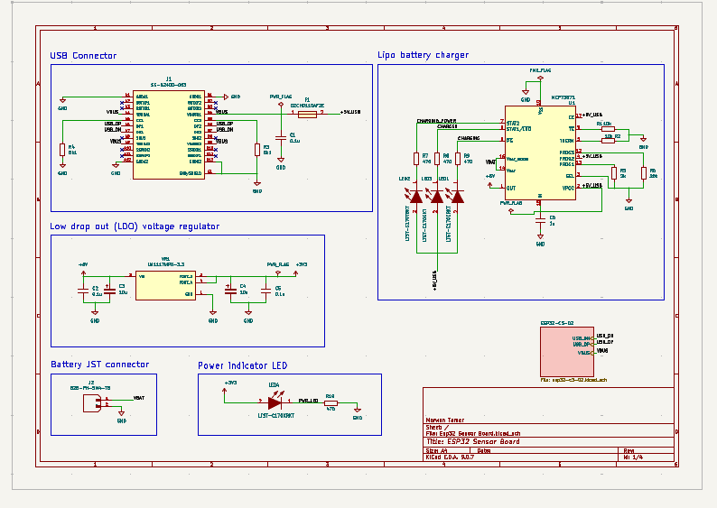
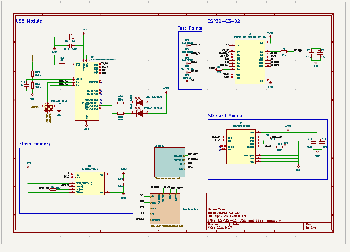
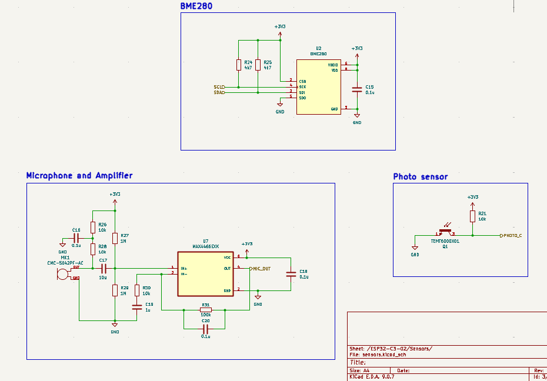
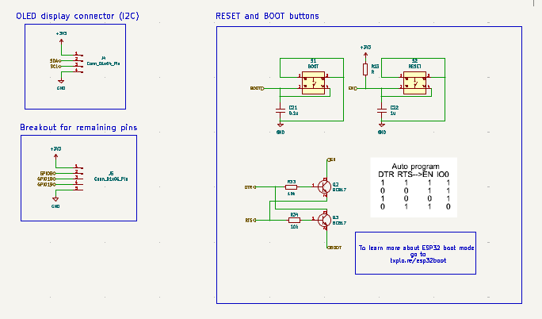
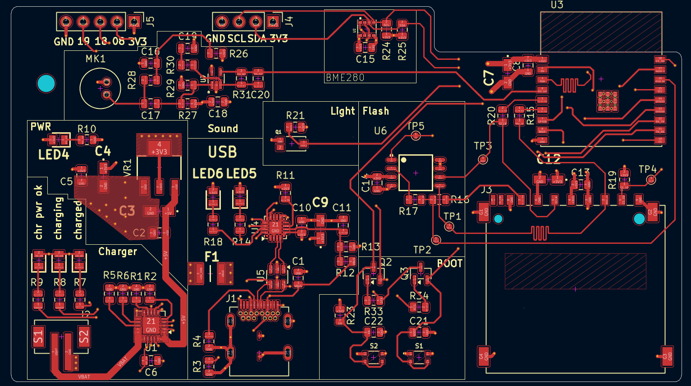
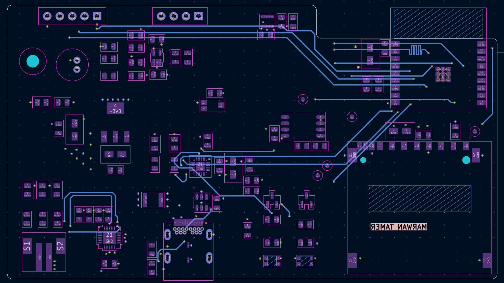
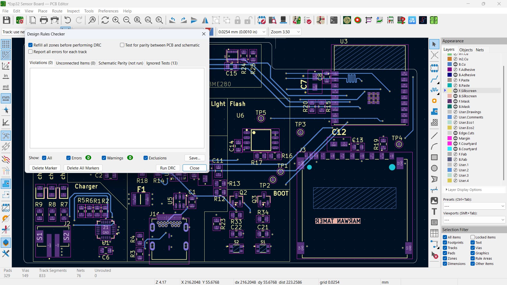
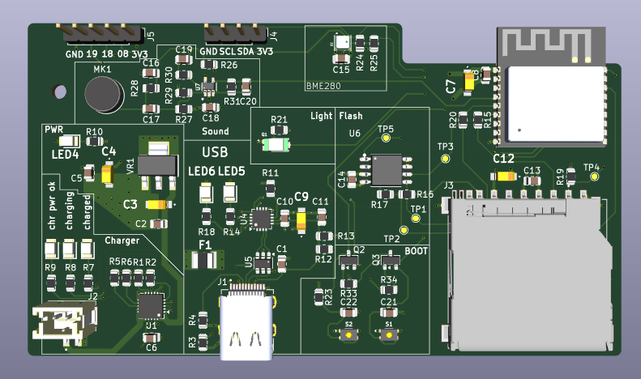
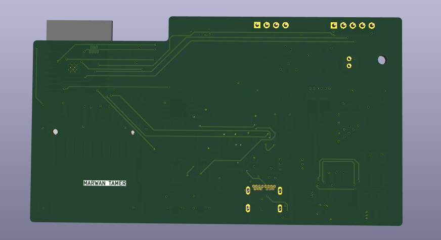

Overview
Custom IoT PCB built around the ESP32‑C3‑02 SoC, featuring integrated power management via a TP4056 Li‑ion charger, USB‑C connector for power and data, and various sensors (BME280, light, sound, accelerometer). The board is designed for data logging and environmental sensing applications. All schematic and layout work was performed in KiCad, and the design is DRC/ERC clean but has not yet been fabricated.
Schematic




The schematic captures power management, sensor interfaces, and MCU connections.
Component Selection
Components were selected based on datasheets for ESP32‑C3‑02, TP4056, BME280, and other peripherals. Footprints were verified against mechanical drawings, and the power‑path design follows recommended guidelines for Li‑ion charging.
PCB Layout


The 2‑layer board arranges components to minimize trace length for high‑speed SPI/I²C signals and places the TP4056 charger near the USB‑C connector for efficient power routing.
DRC / ERC

All design‑rule and electrical‑rule checks passed without errors.
3D Render


The 3‑D model visualizes component placement and board thickness for review.
Manufacturing Files
All manufacturing outputs (Gerbers, drill files, BOM) are stored in the project repository.
What I Learned
- Power‑management integration using TP4056 charger IC.
- Sensor interfacing (BME280, ambient light, microphone) with ESP32‑C3.
- Designing PCB for low‑power IoT applications.
- Creating a compact, 2‑layer layout while respecting clearance rules.